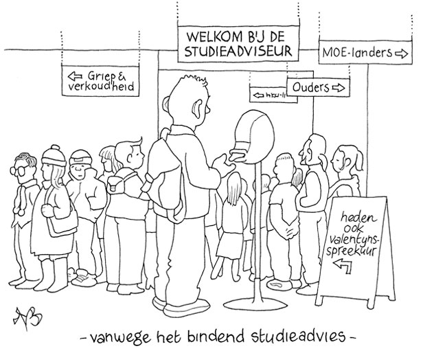
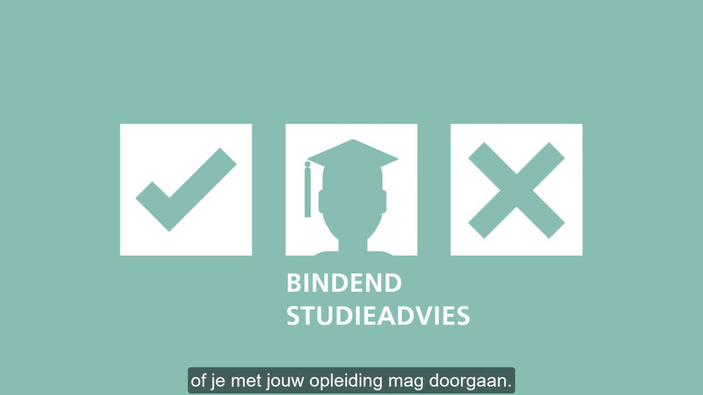

Voorstellen
Mehmet
Mijn naam is Mehmet Ahmed. Ik ben 17 jaar oud, geboren in Rotterdam en woon nu in Ridderkerk. Ik kom van Turkije uit het stad Ankara. Ik woon met mijn ouders, 1 zus en 1 broertje. Ik zit op voetbal en in mijn vrije tijd werk ik in action. Ik zou graag profvoetballer willen worden, maar als ik iets met school zou willen doen wil ik graag ICT’er worden. Ik heb interesse in de ICT wereld wat heel breedt is waardoor ik alle kanten op kan gaan. Mbo4 afronden en daarna doorsturen op het hbo als developer.
.
Shazaib
Mijn naam is Shazaib Raja ik ben geboren op 9 Oktober 2007. Ik ben woonachtig in Rotterdam zuid, ik heb 2 zussen [25 jaar en 29 jaar] en ik heb 1 oudere broer [30 jaar]. In mijn vrije werk ik veel ik werk in de horeca en daarnaast vind ik het ook nog erg leuk om tijd door te brengen met familie en vrienden. Toen ik 2 jaar was toen was ik verhuisd naar Pakistan daar heb ik vervolgens 5 jaar gewoond om de cultuur etc mee te krijgen, later toen ik naar Nederland kwam ging ik pas naar school. Later wou ik graag een eigen bedrijf willen het liefst iets met auto's want ik ben een auto liefhebber maar nu ik ICT doe wil ik dat later juist combineren dus misschien elektro-techniek of iets in die richting


Canvas
Canvas is een online systeem dat het leren en lesgeven makkelijker maakt voor studenten en docenten. Het platform is bedoeld om zowel lessen op school als op afstand te ondersteunen, waardoor het flexibel en toegankelijk is. Via Canvas kunnen studenten eenvoudig hun lesmateriaal vinden, opdrachten inleveren en samenwerken met docenten en medestudenten. Canvas heeft veel handige functies om het leren te ondersteunen. Zo kun je niet alleen opdrachten inleveren, maar ook snel feedback krijgen van je docent. Daarnaast kun je quizzen doen om te controleren of je de lesstof goed hebt begrepen. Dit helpt je om je studie bij te houden en te zien hoe ver je bent. Het systeem geeft je een goed overzicht van al je lessen, opdrachten en deadlines op één plek. Ook kun je makkelijk contact opnemen met docenten en medestudenten, wat vooral handig is voor groepswerk. Verder krijg je meldingen als er nieuwe opdrachten of updates zijn, zodat je altijd op de hoogte blijft. Canvas maakt leren dus overzichtelijker en makkelijker te organiseren.


Eduarte
Waar voor Gebruiken we EduArte?
Eduarte is een app waarin de leerlingen hun rooster en cijfers kunnen bijhouden. De leerlingen zijn al bekend met dit concept, op de middelbare school was er een soortgelijke versie maar heette die dan ' magister' alleen het grootste verschil tussen Eduarte en magister is dat Magister puur gericht is voor de middelbare school en Eduarte puur gericht is voor het MBO. Hiernaast is Eduarte ook handig voor de docenten zij kunnen hier roosters uploaden, cijfers zien, aanwezigheid zien en communiceren met de leerlingen.Ook de Administratieve medewerkers van de school kunnen Eduarte gebruiken, zij doen het vooral om alles te regelen rondom inschrijvingen diploma's etc. Eduarte is niet alleen handig voor de school en leerlingen zelf maar ook voor de ouders zo kunnen ouders want zij kunnen ook toegang krijgen tot de gegevens van hun kind en kunnen zo weten hoe hun kind presenteert op school. Kortom: Eduarte is een handige app voor MBO-scholieren hiernaast ziet u een foto.

Opleidingswijzer
Een opleidingswijzer is een soort hulpmiddel dat je helpt bij het maken van een goede keuze als je een opleiding, cursus of studie wilt volgen. Het geeft een overzicht van verschillende opleidingen en vertelt waar ze over gaan, wat je er later mee kunt doen, hoe lang ze duren, en waar je ze kunt volgen. Soms staan er ook tips in over wat voor soort opleiding bij jouw interesses of vaardigheden past. Het doel van een opleidingswijzer is om het makkelijker te maken om een opleiding te vinden die aansluit bij wat je leuk vindt en wat je wilt bereiken.
Bekijk de video
Link naar video
Locatiegids
Een locatiegids is eigenlijk een soort handleiding of overzicht die je helpt om de weg te vinden op een bepaalde plek of in een bepaald gebouw. Stel je voor dat je naar een grote school, een campus, of een evenement gaat waar je nog nooit eerder bent geweest. Zo’n plek kan soms best verwarrend zijn, met allerlei kamers, lokalen, kantoren en gangen. Een locatiegids is dan een handig hulpmiddel dat je laat zien waar alles is en hoe je er kunt komen
Wat is een locatiegids precies?
Met een locatiegids kunnen je bezoekers snel zien waar ze moeten zijn en hoe ze daar komen, zonder te verdwalen of tijd te verspillen. Daarnaast kun je extra informatie toevoegen, zoals openingstijden, contactgegevens van belangrijke afdelingen, of routes tussen verschillende delen van de locatie. Dit maakt het voor mensen veel eenvoudiger om te navigeren en zich snel te oriënteren wanneer ze je locatie bezoeken.

Begeleiding
begeleiding betekent dat iemand je helpt en ondersteunt om iets te doen of te leren. Het is een beetje zoals een gids die je de weg wijst als je ergens naartoe wilt, maar niet precies weet hoe je er moet komen. Begeleiding kan in allerlei situaties voorkomen, bijvoorbeeld op school, op het werk of bij persoonlijke problemen.
Wat houdt begeleiding precies in?
Begeleiding gaat over hulp krijgen bij iets wat je lastig vindt of waar je nog niet zo goed in bent. De persoon die jou begeleidt, probeert jou te ondersteunen en te zorgen dat je vooruitgang boekt. Dat kan door dingen uit te leggen, je tips te geven of simpelweg te luisteren als je ergens mee zit. Het belangrijkste is dat je niet alles alleen hoeft te doen; er is iemand die je helpt om je doelen te bereiken.

Software
Een software developer is iemand die programma’s en apps maakt voor apparaten zoals computers en smartphones. Veel dingen die we dagelijks gebruiken, zoals sociale media, bankapps en games, werken dankzij software die door developers is gemaakt. Het werk van een software developer begint met uitzoeken wat de klant of het bedrijf precies wil. Dit heet de analyse. Daarna maakt de developer een plan voor hoe de software eruit moet zien en wat het moet doen. De volgende stap is het schrijven van de code. Dit is een soort taal die de computer begrijpt. Hiermee zorgt de developer ervoor dat de software doet wat het moet doen. Als de code klaar is, wordt de software getest om te controleren of alles goed werkt. Vaak komen er dan nog fouten, bugs, naar boven die de developer moet oplossen. Naast het maken van nieuwe software, houdt een developer zich ook bezig met het verbeteren van bestaande programma's. Dit is belangrijk om ervoor te zorgen dat alles veilig blijft en goed blijft werken. Vaak werkt een software developer samen in een team, zodat iedereen kan helpen bij het oplossen van problemen. Omdat technologie snel verandert, moet een software developer altijd blijven leren. Nieuwe programmeertalen, beveiliging en technieken zijn dingen waar developers zich in blijven verdiepen. Het is een uitdagend beroep, maar ook erg leuk omdat je steeds nieuwe dingen ontdekt en oplossingen mag bedenken.
Bekijk de video
Link naar video
SLB
SLB staat voor Studieloopbaanbegeleiding, en het is een systeem op scholen, zoals hogescholen en mbo's, waarbij studenten begeleiding krijgen tijdens hun opleiding. Dit betekent dat je hulp krijgt bij het plannen van je studie, het maken van keuzes, en het vinden van oplossingen voor problemen die je tegenkomt tijdens je schooltijd. Het doel is om ervoor te zorgen dat je succesvol door je opleiding heen komt en goed voorbereid bent op je toekomst, of dat nu een baan is of verder studeren.
Wat is Studieloopbaanbegeleiding precies?
Studieloopbaanbegeleiding (SLB) is een vorm van begeleiding die erop gericht is om studenten te ondersteunen bij hun studieloopbaan. Dit klinkt als een moeilijk woord, maar het betekent eigenlijk gewoon de weg die je volgt tijdens je studie. Net zoals je een gids hebt die je helpt de weg te vinden als je op reis bent, helpt de SLB-begeleider je bij de keuzes en stappen die je maakt tijdens je opleiding. Het is dus een combinatie van studiebegeleiding en loopbaanbegeleiding (loopbaan betekent je carrière of toekomstplannen).
BSA
BSA staat voor Bindend Studieadvies, en het is een systeem dat hogescholen en universiteiten in Nederland gebruiken om te bepalen of een student door mag gaan met zijn of haar opleiding. Als je het niet haalt, kan je gedwongen worden om te stoppen met je studie. Het klinkt misschien een beetje streng, maar laten we het stap voor stap uitleggen
Wat betekent BSA precies?
Wanneer je aan een studie begint, krijg je meestal een aantal vakken die je in het eerste jaar moet volgen. In elk vak verdien je studiepunten (ook wel ECTS genoemd). Deze punten krijg je als je de opdrachten goed doet en je tentamens haalt. Het idee van het BSA is dat je binnen dat eerste jaar een minimaal aantal studiepunten moet halen om te bewijzen dat je geschikt bent voor de opleiding.

